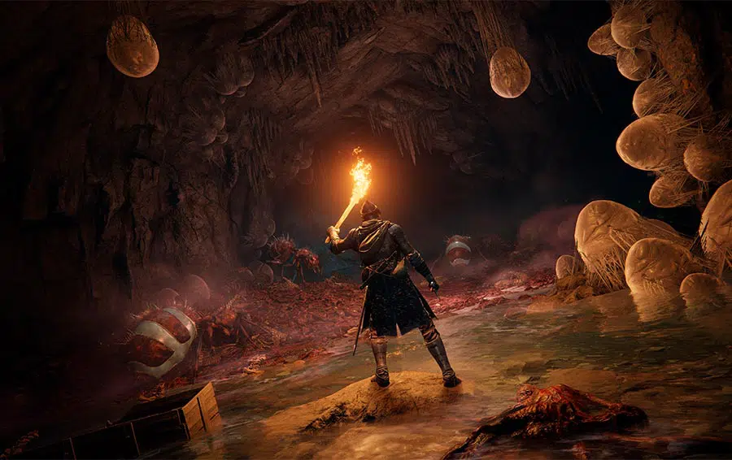
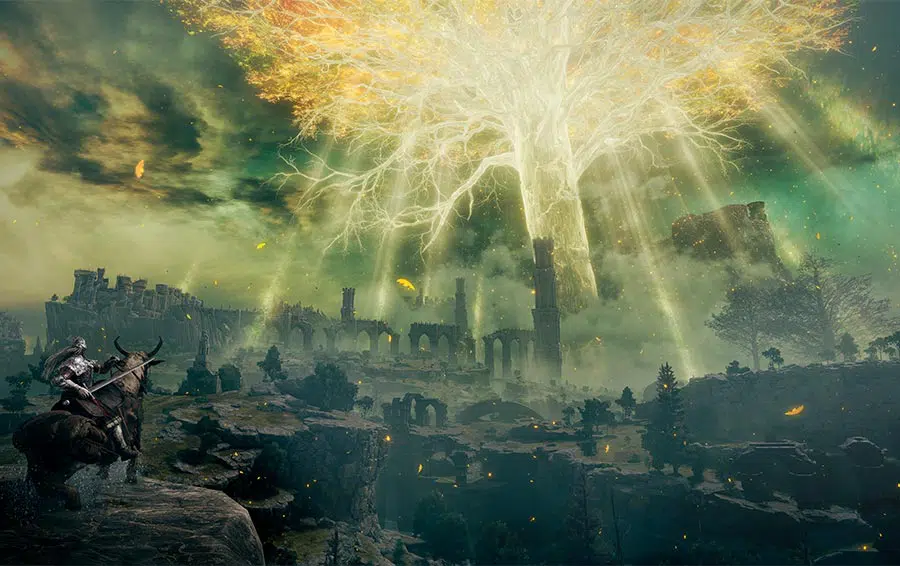
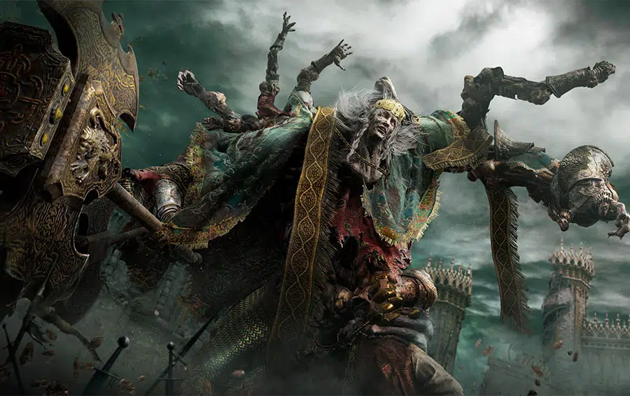
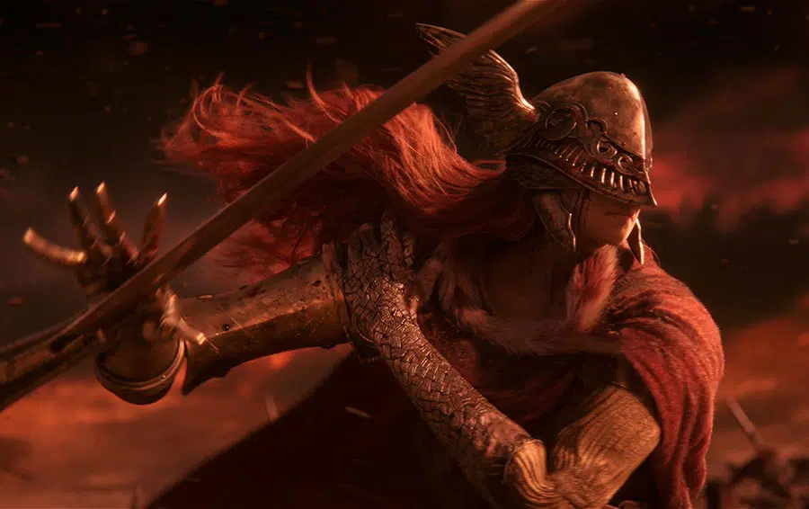
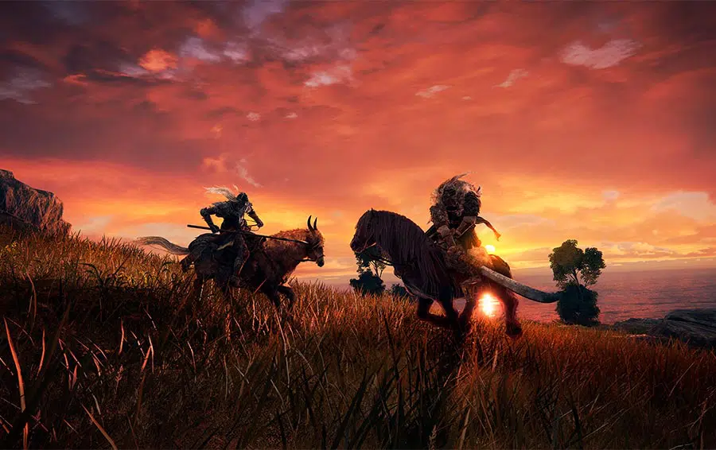

Antes de começar esse artigo, preciso deixar duas coisas bem claras:
Sou fan boy do Miyazaki e da série Dark Souls;
Elden Ring não é Dark Souls 4.
Com isso esclarecido, devo dizer que hoje você vai entender os 5 Motivos para jogar Elden Ring.
Como disse acima, sou muito fã das obras do Miyazaki e pretendo pegar pesado nesse artigo, listando o supra sumo do que já sabemos sobre Elden Ring.
Resumidamente, Elden Ring é um RPG de ação em mundo aberto idealizado pelas mentes criativas de Hidetaka Miyazaki (criador da série Souls e Bloodborne) e George Martin (escritor das Crônicas de Fogo e Gelo, também conhecido como Game of Thrones da HBO).
Elden Ring lança dia 25 de fevereiro de 2022 para Xbox One, Xbox Series X|S, PS4, PS5 e PC.
Com uma nova e densa lore, um mapa grande com muito segredos e personagens marcantes, você conhecerá o GOTY de 2022, vulgo Elden Ring.Agora vamos para a lista que vai te fazer hypar Elden Ring.
5-Dungeons

Todo fã de RPG não pode ver uma dungeon que quer logo raidar.
Em Elden Ring teremos muitas dessas dungeons interessantes.
Já foi mostrado no network test que as dungeons se assemelham bastante os mapas mais lineares de Dark Souls e principalmente os cálices de Bloodborne.
O estilo é o mesmo: você tem um caminho para liberar até o boss da área e no final você luta com ele.
Claro que para chegar até ele você vai enfrentar inimigos amedrontadores e armadilhas insanas.
Também no network test pudemos ver o quão recompensadoras elas serão dando itens únicos, o que é interessante pois você terá que suar para montar sua build.
Elden Ring também possui um sistema de craft mais refinado que os outros jogos da FromSoftware.
Agora você poderá criar itens de combate, poções e outros apetrechos que vão te auxiliar no decorrer do jogo.
Para esse craft ter eficiência você precisa de itens específicos, alguns deles serão encontrados nas dungeons espalhadas pelo mapa.
No fim das contas, entrar nas dungeons será algo muito divertido, pois você não faz ideia de como chegar ao fim dela e que tipo de inimigo irá enfrentar.
4-Mundo Aberto

Pela primeira vez teremos um jogo da FromSoftware em mundo aberto, mas não se preocupe: Eles sabem o que fazem.
Isso ficou bem claro no network test.
A beleza estonteante das Terras Intermediárias tiraram nosso fôlego ao percorrermos com o corcel encantado Torrent pelos vastos campos cheios de vida do mapa.
Umas das ótimas mudanças que o jogo trouxe foi a viagem rápida de onde você estiver. Nos jogos souls like, geralmente você precisa encontrar um checkpoint para pode usar a viagem rápida.
Em Elden Ring basta ter liberado uma Graça Perdida (o checkpoint do jogo) e você pode viajar rapidamente de qualquer ponto do mapa.
Não pense que isso é um facilitador, pois veja bem: Imagine estar longe de tudo e ter que cavalgar até um ponto do mapa. Seria chato né?
Um mapa tão grande quanto será o de Elden Ring precisa de uma estratégia mais maleável de transporte, assim como tivemos em Skyrim e The Witcher 3 por exemplo.
O jogo não vai te dar de “mão beijada” o mapa completo logo de cara.
Você terá que explora-lo e achar Fragmentos de Mapa para abrir partes dele e ter uma visão maior de cada região.
Para ser sincero, quem é fã de RPG gosta de uma boa exploração sem pressa.
Vai em cada cantinho no mapa, olha debaixo de cada pedra e procura cada segredo que o jogo esconde.
No próprio network test já existem alguns segredos escondidos, NPCs secretos com muita lore para contar e itens que mostram mais sobre a história do jogo.
O que vimos até agora esta especulado de ser apenas 13% do mapa total de Elden Ring.
Sério, imagina um mundo aberto criado pelo Miyazaki e George Martin prontinho para contar histórias, propor desafios e nos entreter por incontáveis horas?
3-Personagens

Um dos pontos mais marcantes dos jogos da FromSoftware são seus personagens carismáticos.
Alguns mais inclinados a maldade e outros são apenas sobreviventes no mundo, assim como você.
Todo protagonista do Miyazaki tem algum “título” que explica sua existência, por exemplo em Dark Souls 3 nós somos Inacesos e em Dark Souls 1 é o Morto-vivo Escolhido.
Em Elden Ring seremos um Maculado (tarnished em inglês) e estamos a procura do poder lendário para nos tornar Senhorios nas Terras Intermediárias.
Vou falar da lore do jogo mais para frente nesse artigo, então aguenta ai mais um pouquinho.
Agora queria dissertar um pouco sobre dois bosses que já vimos até agora.
Um design mais bonito do que o outro e com nomes tão interessantes que nos fazem querer saber tudo sobre eles.
O boss principal do network test foi Margit, o Agouro Caído. Ele é o guardião de um dos grandes castelos das Terras Intermediárias.
Margit diz ao Maculado quando o enfrenta:
Maculado imundo, encorajado pela chama da ambição. Tu tens a intenção de reivindicar o Anel Prístino? Alguém precisa extinguir sua chama.
Que esse alguém seja Margit, o Caído!
E quando você o derrota, ele diz:
Lembrarei de ti, Maculado. Ardendo na tua chama exígua. Encolhe-te de medo. Da Noite. As mãos do Agouro Caído não terão piedade de ti.
Olha, só nessas duas linhas de fala já temos mais lore que a maioria dos jogos de hoje.
Imagina o quanto os personagens farão parte de uma trama completa e cheia de ramificações que explicarão como funciona o mundo de Elden Ring.
Tenho certeza que encontraremos personagens incríveis como Lucatiel de Mirrah, Oscar de Astora, Andre de Astora ou o maldito Patches nas Terras Intermediárias.
Outro personagem que roubou a atenção pelo visual e por uma aparição incrível no trailer foi a valquíria Malenia, a Lâmina de Miquella.

Ainda não sabemos muito sobre quem ela é ou qual o papel que ela possui na lore do jogo.
A única coisa que sabemos é que ela com certeza vai ser um boss apelão e vai nos dar muito trabalho.
2-Combate

Talvez a parte mais importante do jogo, o combate é livre, dinâmico e estratégico ao mesmo tempo.
Elden Ring traz o melhor do combate souls like e tira aquela percepção de “bater e rolar” que alguns jogos do gênero possuem.
Você pode usar uma mecânica de stealth semelhante a de Sekiro Shadows Die Twice, porém muito melhorada.
A abordagem nos campos inimigos nas Terras Intermediárias vai depender de como você gosta do combate.
Você consegue eliminar um acampamento inteiro de soldados sem alertar nenhum deles, ou pode só roubar loot do lugar sem nem mesmo desferir um golpe.
Alguns recursos interessantes como a Flecha Sonífera deixa o inimigo vulnerável á um ataque crítico, facilitando a eliminação do mesmo.
Até agora temos treze tipos diferentes de armas e muitos estilos de gameplay que variam de acordo com a build montada.
Apesar de existir a opção de um ataque aéreo, ou seja, você pode pular por aí atacando seu inimigos, o jogo traz a essência dos jogos souls like.
Geralmente em jogos onde o combate é muito dinâmico, acaba virando um hack n’ slash, o que não é o caso de Elden Ring.
Conseguiram balancear bem o dinamismo com o estilo característico de combate da FromSoftware.
1-Lore
Sem dúvida é a parte mais nobre e interessante de Elden Ring.
O que é um RPG sem lore densa, complexa e intrigante? NADA!
Abaixo vou deixar a parte da “sinopse” do jogo, que nada mais é do que a história que da contexto ao protagonista e a Terra Intermediária.
“Nas Terras Intermediárias governadas pela Rainha Marika, a Eterna, o Anel Prístino, a fonte da Erdtree, foi destruído.
Os filhos de Marika, todos semideuses, reivindicaram os fragmentos do Anel Prístino conhecido como as Grandes Runas, e a mácula louca de sua força recém-descoberta desencadeou uma guerra: A Destruição.
Uma guerra que significou o abandono pela Vontade Maior.
E agora a orientação da graça será trazida para os Maculados que foram desprezados pela graça do ouro e exilados das Terras Intermediárias.
Vocês mortos que ainda vivem, sua graça há muito perdida, sigam o caminho para as Terras Intermediárias além do mar enevoado para ficarem diante do Anel Prístino.
A Ordem Dourada foi quebrada.
Ao longo das Terras Intermediárias, semideuses segurando fragmentos do Anel Prístino brigam e fazem guerra pelas ruínas de um reino perfeito, agora abandonado pela orientação dourada da Vontade Maior.
Enquanto os ecos deste conflito trovejam à distância, um pária chega.
Uma vez, seus ancestrais chamaram as Terras Intermediárias de lar, mas a abençoada luz da graça foi perdida para sua tribo há muito tempo e eles foram expulsos do reino.
Eles são os Maculados, e voltaram para reivindicar o prestígio prometido a eles pela lenda.
Este é o mundo de ELDEN RING. Como um Maculado, as Terras Intermediárias aguardam sua exploração.
Você cavalgará pelos vastos campos, galopará sobre colinas ondulantes e saltará para o topo de penhascos rochosos em seu corcel efêmero, revelando um mundo repleto de vida e perigo.
Nos grandes campos onde sua jornada começa, criaturas míticas rondam as savanas, horrores inefáveis espreitam nos pântanos, e todos os tipos de soldados e guerreiros itinerantes estão esperando por aqueles que vagam desprevenidos.
Criaturas tímidas mordiscam gramíneas doces ou correm pela vegetação rasteira.
Aqueles poucos habitantes que não são loucos ou hostis permanecem perto dos restos quebrados das cidades deixadas para trás pela Destruição.
Eles podem ter respostas para você, se você os ajudar.
Acima de todos eles, abrigados em vastos legados repletos de armadilhas, segredos e guardiões, os Semideuses – Senhores deformados que começaram como membros de uma família real e nobre – governam seus domínios com o poder inflexível concedido pelos fragmentos do Anel Prístino.”
Com isso, vou finalizar esse artigo especial com 5 motivos para jogar Elden Ring.